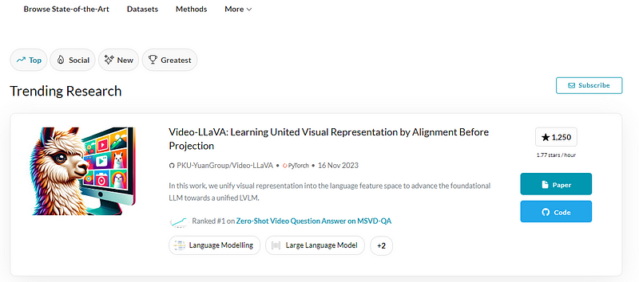
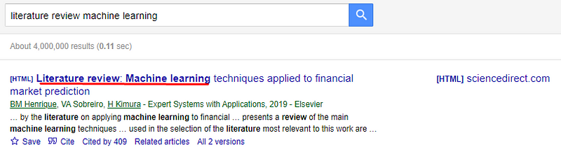
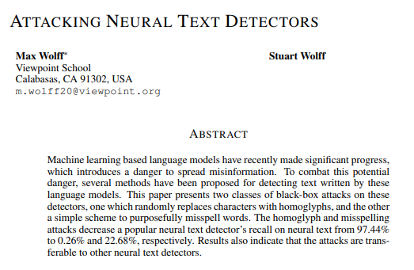
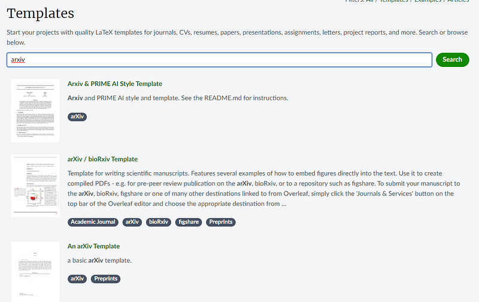

In the beginning a good chunk of this article will make sense.
But there are many parts that become more helpful as you progress in your research journey.
I have so much information in here that works when you first start, then works better once you have already started.
This is one of those blog articles you read once when you start writing a research paper.
Then read again after making a bunch of progress.
So I recommend reading this now one time and then again some time later.
A college degree is not a requirement
At least in the computer science field, you do not need a college degree to publish to academic journals.
Many people seek to publish research papers.
It is a major flex and often required for specific jobs.
As a professor or professional researcher, your Google Scholar profile, article and citation count are often like your portfolio.
They show you truly are an expert and are at the edge of your field.
In the academic world of professors and college grants publishing computer science research papers is a requirement.
But as a computer science lover, you just require a love for your craft and research.
There are many who publish many papers without entering the academic world and getting no formal degree.
The main advantage you get from going to school and writing research papers in school is the authoritative backing of your professor for difficult publishers and the teaching of how to write a research paper.

Given you are a technically advanced person, you can publish without school. You just have to learn how.
Let's say you are in a different boat.
If you have no interest in writing research papers but you want to get a graduate degree in computer science, like a Masters or PhD. You will have to publish 3-5 research papers before they give you the degree.
Some schools opt out of that for the Masters but for a PhD publishing is a requirement.
Whether you are doing this grudgingly or eagerly I will give you some guidance on how it is done.
Lets get into it...
Use Google Scholar for most of your research
There are many search engines out there for finding research papers.
Some exist like...
- https://paperswithcode.com/
- https://citeseerx.ist.psu.edu/
- http://www.ojose.com/ojose_home.html
- https://www.acm.org/publications
- https://www.sciencedirect.com/
- https://ieeexplore.ieee.org/browse/periodicals/title
- etc.
And I do recommend using these. Especially Paperswithcode.
Paperswithcode is amazing for explaining difficult code implementations and many of the articles are not available on Google Scholar.
In addition you can see direct examples of how to contribute code implementations as a research paper.
But for the main meat of your research, Google Scholar combines all the above search engines and more.
Then it shows them in a very intuitive fashion for readers.
I also recommend making a profile and combining your Google Scholar research with a research paper manager like Mendeley.
Pick a topic, stick to it and read a lot
Pick a topic in computer science and read a lot.

Your goal when reading should be to find something that is missing.
Something missing in the computer science research body of all your readings.
A great way to do this is to find all the literature reviews and surveys in your topic in Google Search.
Then read them all.
Look at all their citations and look up all articles which cite them.
You can see them like this...

Click 'cited by' and you will see all the articles that cite it.
To see citations the paper uses, look at the bottom at references.
You can guide your learning by looking backward in the past and forward in the future of literarture reviews and surveys.
As well as searching on your own.
After reading this blog post, you can check out my other article on how to read computer science papers.
I will be leaving all links in the resources section below.
But this article will be only about writing a paper.
Try to read minimum 50-100 articles before even considering a specific research paper topic or writing an outline for your research paper.
Keep notes about the topic you are reading about as you go and learn terminology, concepts and note potential writing ideas you may have as you fulfill your minimum 50-100 research paper requirement.
There are so many ideas and concepts you have to learn out there. You will have a completely different perspective after say 50+ articles.
You will also see patterns and formatting which will help you in future writing.
To start though, read literature reviews & surveys first.
Afterward if the surveys and reviews you see out there seem lacking in more recent research, then you can make your own survey or review, depending on which is missing.
Survey vs review
When searching for literature reviews & surveys, a survey is a summary of literature or a selection of articles.
For example you can choose the most recent 50 articles in the computer networking field and make a summary of those and call it a survey.
A review is the same thing but includes a deep analysis of what is missing in that whole topic's body of research in the past few years.
A survey is easier to make but a review is more useful for future research.
Typically a review requires more included articles than a survey, often between 100-350 research articles.
Often reviews will tell you what you can research in the future. You should be able to bounce off of those.
If you are really gung ho about making an extraordinary literature review, then after reading this article you can watch this...
How to Write a Systematic Literature Review Paper for High Impact Factor Journals? A/Professor Vidy
I heavily benefitted from that video as it explains the entire process of getting into a difficult journal using literature reviews.
But yes, I have some good things to say here too so read on...
You only need 1 contribution
The goal is to contribute somehow. 1 contribution is enough, more is better.
You cannot expect to get published without some type of contribution.
I will give you examples of some contribution types.
I only write them to you so you can keep them in mind.
I do not expect you to memorize this or even truly understand it.
It is just to give you a quick taste of what is out there.
So you can just read about the contribution types and leave it at that.
Contributions in research papers have to have a sort of flavor to them.
While in a blog or newsletter you can rehash known information in any manner and no one cares.
In research papers they typically have to read as though new and novel to the current body of research.
They don't truly have to be but they have to read as if they were novel.
After reading a good chunk of research papers you should see a pattern as to how all these authors dress their contributions.
You will have to think of your contribution and dress it like the others.
If it tastes the same as how other authors write research then it should be publishable.

But it has to at least seem like you paper has minimum 1, ideally 2-3 novel contributions.
Here are some solid examples of contributions you can make:
- A dataset
- Novel implementations: ML model, simulation, security method
- Novel experiment: typically involves performance or security
- Literature review
- Literature summary or survey
The contributions can be these or any combination of these.
How a dataset contribution should look
The dataset should be something no one else has done and is on the larger side.
Datasets can be retooled from old datasets as long as it is open-source and the change is new to the research body.
The purpose of datasets in a research paper is for someone else to create their own research paper based on your dataset.
So keep in mind, if you create a dataset it should be usable by others.

An example I did in the past was use Python to completely scrape 100,000 Wikipedia articles as a dataset for people to use in a custom LLM.
That was a good dataset to publish and I would write about it as a 2023 version of Wikipedia.
Though I would consider 100,000 articles to be bit small. I would implement a GPT-2 Model with the dataset as GPT-2 is open source during this time.
Then make a Wikipedia detector or something just as an example of how to use the dataset.
For sure, that would get published on a low rejection publisher, so long as no one has done it in the past few years.
How an implementation contribution should look
An implementation paper needs to be unique and seemingly lofty.
You can't write a small Python script and expect it to get published.
It has to be something that looks highly complicated or lofty like other implementation-based research papers out there but doesn't necessarily have to be.
This paper for example:
Is a fuzzing script for an existing fake text detector.
It is very simple but shows both an an implementation and experiment contribution for exposing vulnerabilities in an existing model.
It is not daringly difficult but it seems lofty.
It takes a popular detector and shows concept by concept how to trick it.
In the end the implementation was just changing letters to those outside the model.
But it was dressed really really well.
Your implementation can be a brand new one or an extension of someone else's implementation.
In addition, none of these implementation papers read like a ReadMe file on Github.
When writing about implementation your goal should be to allow the reader to understand the underlying concepts of the implementation.
Instructions on how to use your implementation or the fine details of the code itself should not be in the paper.
Instead its about the math, architecture and novel concept behind the implementation or dataset.
After reading, your readers should be able to rewrite your implementation from scratch concept by concept, assuming they are an expert of course.
Also, I would say extending someone else's implementation is way easier.
The GPT-2 example and that paper, Attacking Neural Networks, I gave earlier is an extension of someone else's model so its much faster to implement the code.
Many researchers never make their own implementations and solely focus on extending other people's projects like in that paper.
In addition future authors make implementations on that implementation, extending more and more.
Making a brand new implementation in your first 10 research papers would be very difficult to publish as I would assume you are newer to coding too.
I recommend at the start using someone else's project or model and extending it.
How an experiment contribution should look
An experiment for a research paper can be these types...
- A simulation using simulation software
- Human-computer interaction experimentation
- Performance tests on new technology
- Security threats in networking
- Edge cases or security threats in machine learning
- Security threats in lofty looking software engineering concepts or software
- Social engineering using new technology
- Tricking machine learning models
- Enhancing performance of machine learning models
- Etc.
There are many experiments you can try out.

As you read research papers different ideas should come to mind and you will see more and more examples.
The paper should write out something that is believed in computer science and either affirms it, denies it, explains it or reveals questions about that belief in computer science.
It can be about computer networks, machine learning, graphics programming, cryptocurrency, computer psychology or whichever topic you find of interest.
Start with a publisher with a low rejection rate
In the beginning it is a good idea to read articles with a low rejection rate publisher in mind.
In the future this can change, easily.
But right now ArXiv is a common starting point for computer science researchers.
If it is different in your time, this blog post is evergreen. Just switch that website with whichever publisher is popular to start in your time.
Publishers like ArXiv have a lower rejection rate than journals but are still prestigious.
They have a distinct formatting and outline of their articles.
I recommend reading the publisher you intend to write for first.
In addition to that read other publishers on Google Scholar.
But read with the intent of publishing to a journal with a low rejection rate.
Look at what is already published
Every time you write for a publisher it is required to follow the outline and format of that publisher.
ArXiv for example has a distinct outline and format that you have to follow that appearance to the T.
Always double check your paper looks very similar to the most highly cited papers by that publisher in your topic.
As you read your 50+ papers you should start seeing patterns and soon be able to replicate it.
You need to always suggest future research
The whole reason other Computer Scientists are looking at your paper is to find out what they can research next.
By giving your readers opportunity to see future research the publisher will find favor with you.
Using the outline and format of your paper, add a future research section at the bottom.

For example, take a look at these 4 paragraphs on ArXiv.
You don't have to read it, but look how it is right before the conclusion.
This is a great way to win over a publisher.
For the reader reading your paper the conclusion should not be the end. There should always be a continuation or future research the reader can follow using your paper.
Use LaTeX
Microsoft Word or Google Docs is very difficult to use for writing research papers.
You need an editor which can change the formatting and appearance of your document with colored templates for each publisher.
Essentially you have 1 document with 3-5 templates for each publisher.
For this, LaTeX has been the de facto standard of writing research papers for many years.
Mostly because it is easier to apply to multiple publishers because all you have to do is download the publisher's LaTex template and it auto-formats the paper.
You still have to edit the fine details but you should be able to start with an example paper like this...
It is basically a pre-written research paper with example text.
Most publishers have their own templates out there on the internet.
If you use Overleaf for example, you select a template. Then you copy and paste your article text into the template and voila. You have a formatted paper for whichever publisher.
What is cool, if you apply another template, for example ACM's publisher templates, your paper will get automatically converted.
You still have to edit the paper but its much easier to start pre-formatted like this.
Think of LaTex as a really advanced markdown with automation for converting the format of your articles.
Many editors exist for LaTeX which you can search out there.
Today, most academic researchers use Overleaf.
The most used editor can be different in your time but I expect LaTeX will live long in academic research.
Litter your paper with citations
You need 5-7 citations minimum per page littered throughout the paper. Of course you are re-using them as you write.
At the end of the paper you should have at least twice more citations than pages.
So if its a 10 page paper there should at least be 20 citations.
Though having many many more is way better.
Often more citations is better as it makes you look like you did a lot of research.
They should be relevant and they should actually contribute to both you and the reader understanding your paper.
There is a formatting that is necessary in your paper and citation section.
I highly recommend Mendeley for managing citation and organizing your paper.
When you are done with this article I talk about citation management in how to read computer science articles.
Apply to many journals
I have seen people apply to 8+ journals and improve their article every rejection with the publisher feedback.
It is likely you will get rejected on your first try to submit to a publisher.

When applying to that first low-rejection publisher you should get some feedback as to how to improve your article.
They should tell you what you need to do to resubmit.
Follow all the feedback and try again.
Once you are published, hopefully it works out, you may want to try to get into a more prestigious journal.
Reformat your article in LaTeX to that publishers format and submit.
Do this for multiple journals.
You will get rejected many times.
It is highly likely as you improve the article and increase your publisher submission count, you will get published.
Summary
The essential parts of a paper...
- You must have at least 1 contribution
- Have minimum twice the citations than pages
- 5-7 citations placed in each page
- Formatting, outline & appearance should match the publisher
- Show readers how to continue future research after you.
- Start with a low rejection publisher
- Always follow rejection feedback
- If you want a prestigious publisher, apply to many of them
Anywho, I hope you learned something...
Happy coding!
Resources
How to read research papers: How To Make Progress Reading Computer Science Research Papers
ArXiv: https://arxiv.org/
Mendeley: https://www.mendeley.com/search/
Overleaf: https://www.overleaf.com/
Extensive literarture review tutorial for graduate students: https://www.youtube.com/live/Wkc21gkJ5lo?si=JUwVkkPkQQhZs2KH